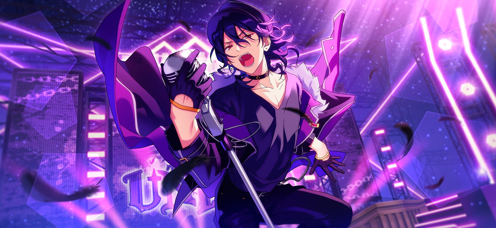
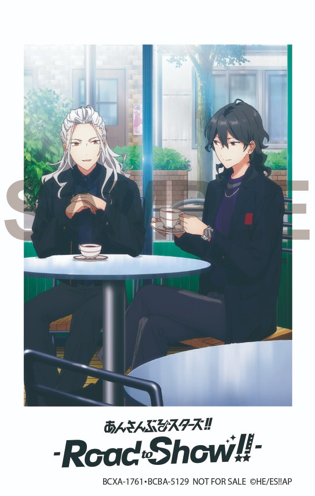

Here's a web shrine for the idol I love most, who I selfship with!
Rei Sakuma
"Do well to remember that we all love and care for you."
Rei Sakuma is a character from the multimedia project Ensemble Stars!!. He is an idol and the leader of UNDEAD, a wild and versatile unit under the fictional agency Rhythm Link. A hereditary condition makes him similar to a vampire; he's weak during the day, he needs blood (or iron supplements) to survive, and he prefers to sleep in a coffin. Loves his little brother Ritsu. He's in the Mystery Researchers and BB (band) circles.
Rei is also the leader of the Five Eccentrics, an informal group of talented idols blamed for the decay of Yumenosaki Academy.
While well-spoken and very intelligent, he is known for speaking in a strangely old-fashioned style and acting much more elderly than he is. He loves humankind with all his heart, and he has a habit of meddling in others' problems in an attempt to help them. At the same time, he considers his vampirism an important part of who he is, and he enjoys the cold, quiet night. His hobbies include walking in gardens and reading. Among his friends, he can be mischievous and playful. He always takes his duties seriously, whether it's as an idol or as the head of the mysterious Sakuma clan.
He is voiced by Toshiki Masuda and played by Koji Kominami in the stage plays.
Birthday: November 2nd
Age: 19-20
Height: 179 cm / 5'10"
Blood type: B
Specialty: Jazz dance
Solo: Bloody Moon Vampire
Signature:
Facts About Rei
- He uses kaomoji (≧∇≦)
- His favorite foods are tomato juice and dry-cured ham.
- According to Eccentrics, he likes his coffee sweet and black.
- He can play the guitar, drums, piano, and violin.
- He claims to be weak to flowing water, garlic, crosses, and holy places such as churches. This probably isn't true.
- He was briefly student council president.
- He took a year off from school to study abroad, and he has traveled a lot. Some places he has been to include New York, England, and the Arabian Peninsula. He has popularity as an idol worldwide.
- He knows English and some form of sign language.
- He loves the fictional period drama Vampire Shogun, and his persona is based on its main character.
- The precursor unit to UNDEAD was DEADMANZ, formed temporarily in Rei's second year.
- According to Kaoru, Rei is skilled at billiards.
Selfshipping
I started playing the English version of Ensemble Stars!! Music the day it released, June 16, 2022. A friend of mine had started playing it, and I decided to give it a try too. My favorite character at the time was Tori Himemiya because I love cute pink characters. Sometime in the middle of July, I read Rei's first Idol Story, and I've been in love with him ever since.
I ship him with myself and think of him as a romantic partner! I've loved selfshipping since I was in high school, and fictional characters have always been important to me in that way. My Enstars self-insert is a producer who works with fine at Starmaker Production.
Our anniversary date is 7/16/22, and we got engaged 10/31/22.
Personal Feelings
In Rei's Idol Story 1, the producer encounters him after having to accompany a drunken idol back to Starmony Hall. In between some good-natured teasing, Rei becomes concerned about you, scolding you for your recklessness and reminding you that not everyone has good intentions. He tells you, "Do take more care of yourself. I would turn over in my grave if something happened to you. I would most certainly live with indelible regrets until my last breath. Is it your intention to leave me an eternal scar?"
And that was... it for me. Love at first sight, really. It moved me how much he cared about the producer and even more so how honest he was about it. From then on, I only wanted to know more and more about him. And I loved everything I found in him. I love how he cares about everyone, whether it's his little brother, his friends, or all of humanity. I love his vampire habits that might be insufferable to other people but are cute and endearing to me. I love all the different parts of Rei: the punk he used to be, the "old man" he's become, the head of the Sakuma family, the idol who wants to try anything and everything, and the lonely Rei who tried so hard to be useful to people that it hurt him. The wholehearted, selfless way he loves that's an integral part of his character—as Wataru says: "The monster overflowing with more human kindness than anyone else in the world." I love that about Rei, and I want to give him that much love and more too. He's such a big brother figure within the cast, but I think he too has a need to be cared for and treated like he's precious.
Rei's vampiric condition, and the way it sets him apart from other people, is something that I also relate to deeply. For many reasons, I've always struggled with a feeling of exclusion. I love meeting new people and talking to my friends, but it's still difficult for me to feel "normal" compared to others. If other people are human, I feel that I must be a changeling: a simulacrum of a person that can't ever be accepted as one. But with Rei, all of that feels... okay. He would never judge me for having difficulty speaking, or relating to people, or being social in the right ways, and he rarely gets angry. And the way he embraces his extraordinary existence is something so wonderful and optimistic to me. It's easy to lament the ways in which you're different, but it takes a kind of strength to accept "eccentricity." It makes me happy to think that he would love me that way too, that he would wholly and easily cherish the things I see as flaws. Maybe we could learn to be human beings together, and we could live in a truly happy and enthusiastic way.
I feel so incredibly lucky. That I decided to try out Enstars that day, and that everything lined up in just the right way for me to meet him. The love I have for him is the most vulnerable, unabashed love I've ever felt for anyone, and I'm so, so glad to love him. He's stylized as an immoral demon, but to me he'll always be an angel I encountered when I least expected it, in the form of the sweetest vampire I've ever met.
Official Art, Animations, and Photos
Favorite CG
I just love Noir Neige so much the story and the song and everything. He's a grim reaper in this and I love everything going on with the character he plays, also he's just so cool and beautiful .·´¯`(>▂<)´¯`·.
Other UNDEAD Members
UNDEAD stylizes themselves as immortal demons, and their music is primarily rock-based. Despite their image, they're approachable people who were all brought together by Rei. My favorite songs from them include Honey Milk As You Like and PERFECTLY-IMPERFECT.
Kaoru Hakaze: A flirtatious surfer who's sensitive and reliable. One of the "two attractions" of UNDEAD alongside Rei.
Koga Oogami: The tsundere type, a boy who calls himself a wolf and loves rock more than anything else.
Adonis Otogari: A kind and athletic boy who likes playing the ocarina and looking out for his juniors.
Road to Show!!
Ensemble Stars!! -Road to Show!!- is a movie adaptation of Enstars that came out March 4, 2022. It's about 10 idols flying to New York for the Idol Film Festival and getting into trouble while they're there. I'm including it here because I enjoyed it—and because Rei is one of the idols in the movie, so he appears in a lot of promotional material :)

Ensemble Stars!!
Ensemble Stars! (Enstars for short) started as a boys-version spin-off of the idol series and gacha game Ensemble Girls! in 2015. It later rebranded to Ensemble Stars!! and split into two apps: Basic and Music, with Music being a rhythm game. As of !! era, there are 49 idols in the main cast and 15 units (or idol groups) in total! In addition to the main storyline, there are many shorter stories you can unlock, each focusing on a different set of characters or units.
Though it's an idol series marketed to girls, Enstars has been described by its developers as more like a shounen manga. There are sometimes darker elements in it such as kidnapping and blackmail, which puts it in contrast to a more lighthearted idol series such as BanG Dream!. The first era of Enstars focuses on the characters' school life at Yumenosaki Academy, while the second era is about their careers and the challenges they face in the idol industry.
Aside from the interesting characters and writing, I really like the music of Enstars! Some of my favorite songs are:
- BIGBANG REFLECTION!!
- Eccentric Party Night
- RAINBOW CIRCUS
- Sei Shounen Yuugi / Sacred Youths' Games
- Sajou no Roukaku / Castle of Sand (yes, both past-Valkyrie songs are my favorite)
If you made it this far, thanks for checking out my page!